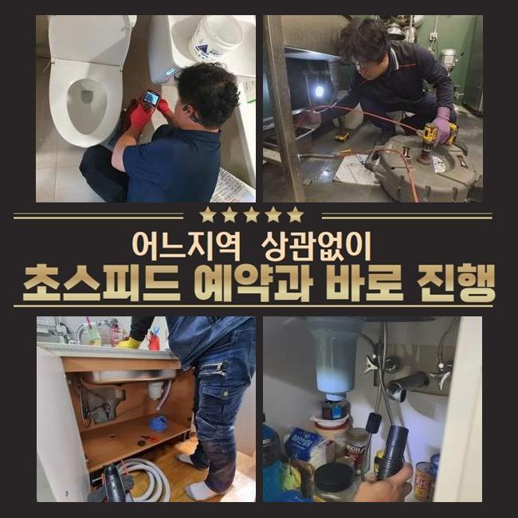
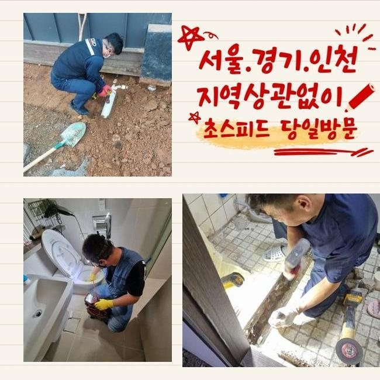
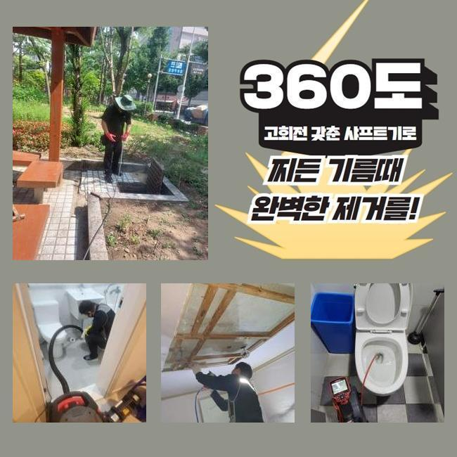
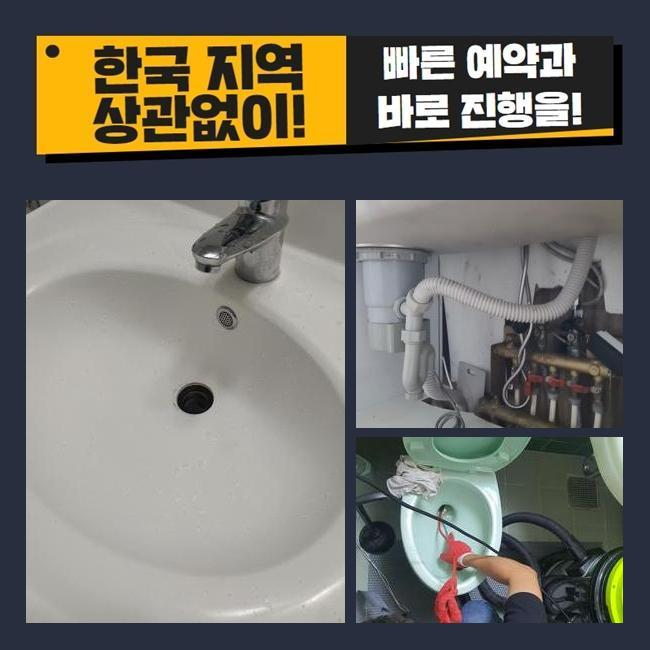
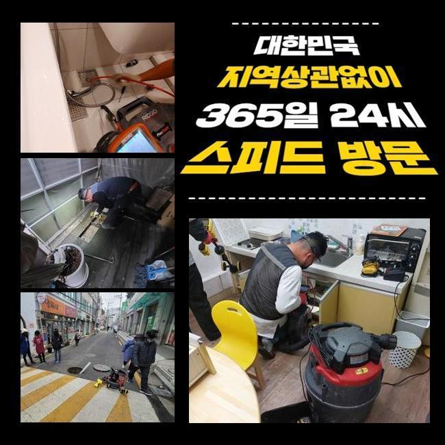
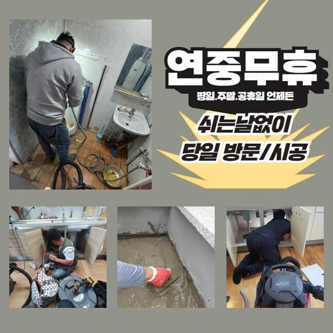
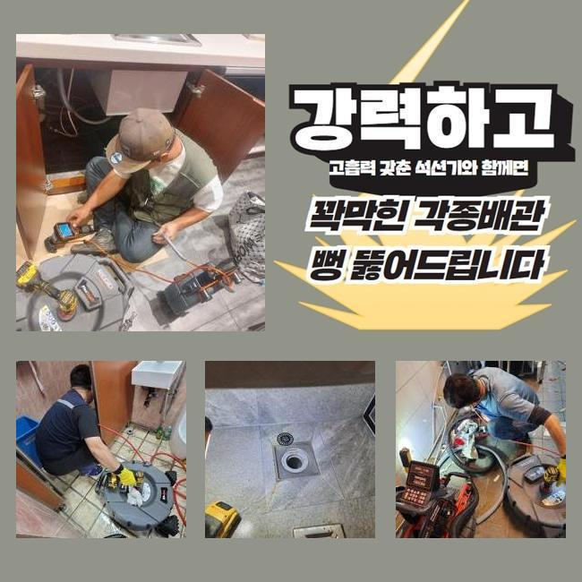

🏠 종로 도렴동화장실하수구막힘 원남동 하수구뚫는비용 배관전문
용인 남동 하수구막힘 전문 시공 후기

📋 작업 개요
- 위치: 용인 남동, 남동, 용인
- 서비스 유형: 하수구막힘, 배관막힘, 누수수리, 역류해결, 뚫는업체, 배관청소, 설비공사, 악취차단
- 작업 일시: 2025. 3. 13. 1:26
- 업체명: 하수구수사대 (010-5615-2118)
🔍 문제 상황
종로 도렴동화장실하수구막힘 원남동 하수구뚫는비용 배관전문
하수구 중단이 생기는 문제점들은 다수지만 대표적으로 슬러지와 석회가 흔한 방해물이라고 말씀 드릴 수 있습니다
하수구 공사를 하고서 물 막힘이나 물 역류가 발견되면 유입된 건축자재나 석조 등을 원인으로 생각을 하는 편이 유력할 수 있습니다
오늘의 현장에서도 클리닝을 하는 도중에 이물질들을 속에서 관찰할 수 있었습니다
평범한 집에서 하수도막힘이 생기고 오래 방치되면 가까운 세대로의 전이가 발생할 수 있으니 빠르게 통수를 막는 대상을 없애야합니다
게다가 상가라면 생계를 위협하는 이슈이기 때문에 조금도 지체하지 않는 수선에 들어가야 합니다
오늘 찾은 곳은 얼마전 실시된 인테리어시공이 있은 후부터 하수구 기능이 마비돼서 고충이 어마어마하셨다고 말씀주셨어요
보통 인테리어시공이 있은 후부터 파편이나 도구들을 말끔하게 정돈하지 않거나 관로로 흘려보내면 막힘의 사유가 될 수 있습니다
갖가지의 문제들로인해 하수기능의 불능이 빚어지니 확신을 가지지 않고 저희의 장치들을 두루 싣고 고객님이 계신 건물로 갔습니다
고객님과 인사를 드리고 어떤 상황인지 판별해 보았는데 수전이 연결된 배수구의 막힘이 도래한 것이었습니다
흡입을 하는 석션으로 근처의 정돈부터 들어간 다음에 파이프 안의 하수 흡입해주었습니다
이미 고착화가 된 상태라 석션의 흡입력 갖고는 불충분한 상황이었지만 다음 작업을 위해서라도 희뿌연 물기를 사라지게 만들어야 했습니다

🔎 원인 분석
💡 전문가 진단: 정밀 진단 장비를 사용하여 슬러지의 고착 여부를 판명하고 타격/세척 작업을 실시했습니다.
하수배관을 시원하게 뚫으려면 종합적인 장비의 사용이 무엇보다 중요합니다
우선은 흡입을 위한 석션과 플렉스샤프트는 꼭 필요하고 배관 안을 확실하게 체크하려면 내시경도 돌려보아야 합니다
중앙배관에 속하거나 깊숙한 안쪽에 설치되어 있다면 물을 강하게 발사하는 고압 청소기를 추가할 수 있어서 항상 보유여부를 확인하고 현장에 갑니다
요즘은 종합적인 장비의 사용이 점차 업그레이드가 되니 하수구 뚫음 작업이 시간적으로 단축됩니다
심도 깊은 노하우가 불충분하다면 효율적으로 장치를 발휘하기 힘들 수 있습니다
무엇이 잘못됐나 추적하지 않고서 세기조절없이 장치를 쓴다면 하수구의 파손까지 벌어질 수 있으니 노즐에 달린 내시경 기기로 수로 내부를 탐색한 다음 뚫어내는 기기를 통한 작업을 실시하는 게 좋습니다
관로 내 수분을 빼내고 배관 내시경을 깊은 배관 내측으로 내려보내서 무엇이 문제인지 확인해봤습니다
추정했던 것과 같이 흙먼지라거나 깨진 유리같은 것들이 빼곡하게 채워져서 통로가 마비되는 것을 체감할 수 있었습니다
인테리어업자를 부르시거나 업무를 했으면 바닥 배관으로 분진이 흘러가지 않게 구멍으로 부터 멀리 모아두고 청소를 해주어야 합니다
한참 내려가다보니 거대한 흰 덩어리가 목격됐는데 보양을 제대로 하지 않아서 시멘트 가루가 안으로 새나가서 물과 만나서 경화가 된 것으로 추론할 수 있었습니다
수습이 되지 못한 약간의 백시멘트가 유입된 듯 했어요
약간의 틈만 보이는 상황이라 물이 이동하지 못한 것입니다

🔧 작업 과정
촬영장비로 관로 안을 둘러보며 뚫는 작업을 담당해서 다치지 않게 해주었어요
샤프트로 오물들과 슬러지를 작은 조각으로 나눠서 수습하기로 결정했습니다
작은 파편들을 석션기로 빨아당겨보니까 생각보다 더 큰 조각들이 나오더라고요
오랫동안 작업을 해봤으니 내부 시멘트가 접착력이 높게 붙어버려서 배관 교체작업까지 할 수도 있는 상황으로 감지할 수 있었네요
샤프트만으로는 깔끔한 성과를 내지 못할 듯 하여 배관 자체에 충격을 주는 작업 때문에 배관이 절단될 수 있겠다 싶었어요
바닥 쪽 타일을 걷어내서 배관이 어떤지 살펴보고 노선을 결정짓기로 했습니다
다시 매끄럽게 복구해드리겠다고 전달드린 후 굴착했습니다
안에는 백시멘트가 가득 차올라서 관로가 봉인되었던 것이었습니다
인테리어 업무를 하면서 쓸려간 시멘트 분진이 덩어리화가 된 것입니다
시멘트 가루들은 건조가 빠르기 때문에 관로가 차단이 되는 현상들이 현장을 다녀보면 흔히 보이곤 합니다
문제되는 쪽을 정상적인 배관과 맞물리게 고정했습니다
하수관 일부를 절단할 때도 절단면이 고르게 절개를 해주어야 하며 연결부에도 틈이 형성되지 않게 촘촘히 연결합니다
연결부를 이격이 일절 없도록 신경쓰지 못한다면 점점 틈새가 생기고 갈라짐이 생겨서 누수상황으로 연결될 수 있거든요
배관이 흔들흔들하거나 분해되지 않도록 신경 써서 관로를 새 자재로 바꿔드렸습니다
갈아내준 찌꺼기 입자들이 수북하게 꺼내졌습니다
제각각 다른 오염원들이 관로를 메우고 있었으니 물 방출이 안 된겁니다
물이 잘 내려가는가 수돗물을 콸콸 틀어서 폐수시켜보는 과정을 통해서 배수 기능 검사에 들어갑니다
이제는 물이 범람하는 고질적인 문제들이 싹 사라진 사실을 알아차리고는 미장 업무에 만전을 기했습니다
시멘트를 구멍 안에다 넣어 배관을 밀착시키고 단차가 발생하지 않게 최종마감을 해줍니다


✅ 작업 완료
추가로 백시멘트로 방수 레이어를 쌓아주고 아까 탈거했던 타일 자재를 접착시켜줍니다
하수구를 고치고 나서 새로 깔아준 바닥부에 방수기능은 넣어주지 못하면 아랫집으로 물샘이 발생될 수 있는 부분이니 건너뛰지 않고 모든 단계를 더블체크하곤 합니다
견고하게 양생되기까지 밟거나 이용하는 활동을 지양하시라고 알려드리고 어려움을 겪던 하수구 시공을 완성하게 됐습니다
하수관이 마비되는 상황은 다양한데 이번처럼 욕실 쪽 하수 장애도 흔하게 일어나서 문의를 셀 수 없이 해주고 계십니다
빠르게 내방드릴 수 있으니 접수를 해주시면 차단되어 미진한 하수구 통수를 안전하고 깔끔하게 고쳐드리겠습니다




⚠️ 베란다 누수 및 방수 관리 방법
- ✅ 비가 많이 올 때 창틀 주변이나 아래층 천장에 얼룩이 생기는지 정기적으로 확인해 보세요.
- ✅ 우수관 주변 실리콘 마감이 들뜨거나 깨진 틈새가 있는지 손상 여부를 수시로 체크하세요.
- ✅ 베란다 바닥 타일의 줄눈(메지)이 소실되면 그 틈으로 물이 침투하여 누수가 유발됩니다.
- ✅ 누수 의심 증상 발견 시 방치하면 아래층 손실이 커지므로 즉시 전문가의 진단을 받으십시오.
💡 핵심 정리
- 확실한 장비 작업(내시경 점검 및 샤프트 스케일링)으로 원인을 뿌리 뽑습니다.
- 작업 후 1년 이내에 동일한 부위 재발 시 100% 무상 A/S 서비스를 보장합니다.
- 서울 · 경기 · 인천 전 지역에 24시간 언제든 긴급 출동할 수 있도록 항시 대기 중입니다.
❓ 자주 묻는 질문 (FAQ)
🚨 용인 남동 하수구막힘 문제로 고민이신가요?
정확한 원인 진단과 확실한 시공으로 재발 없는 해결을 약속드립니다.
24시간 긴급 출동 | 서울 · 경기 · 인천 전지역 | 1년 내 재발 시 무상 A/S